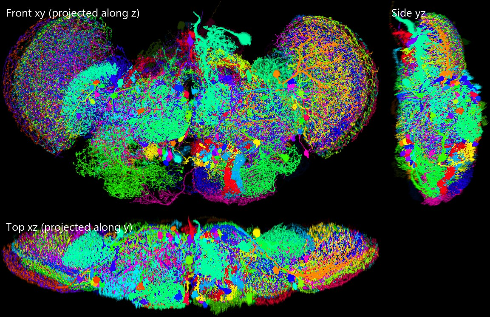
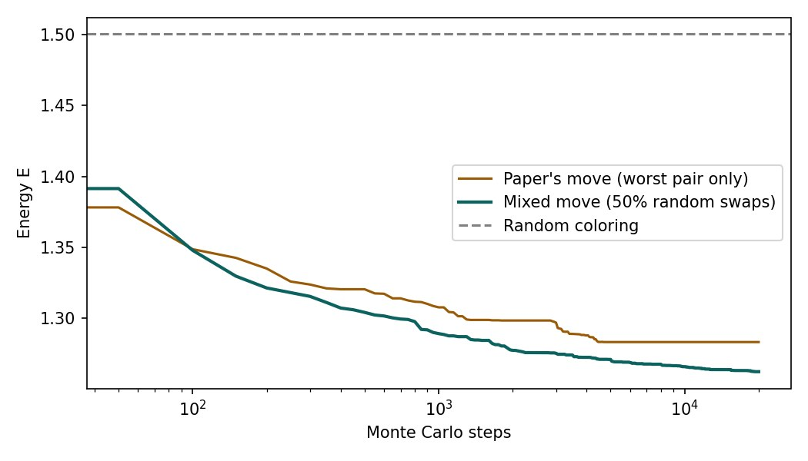
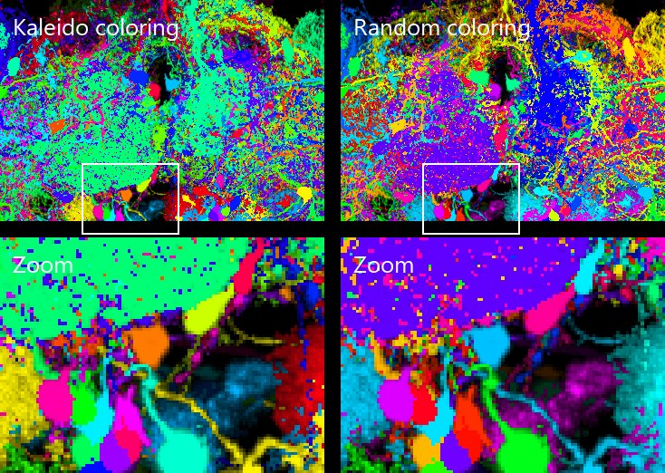
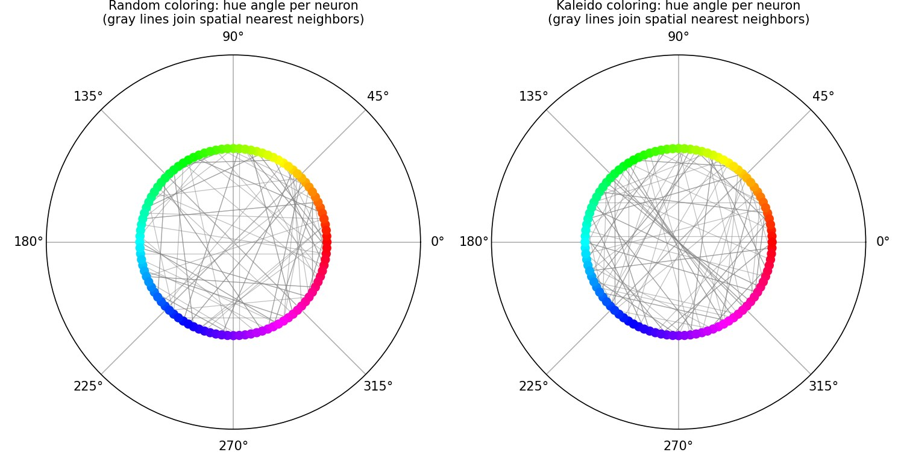
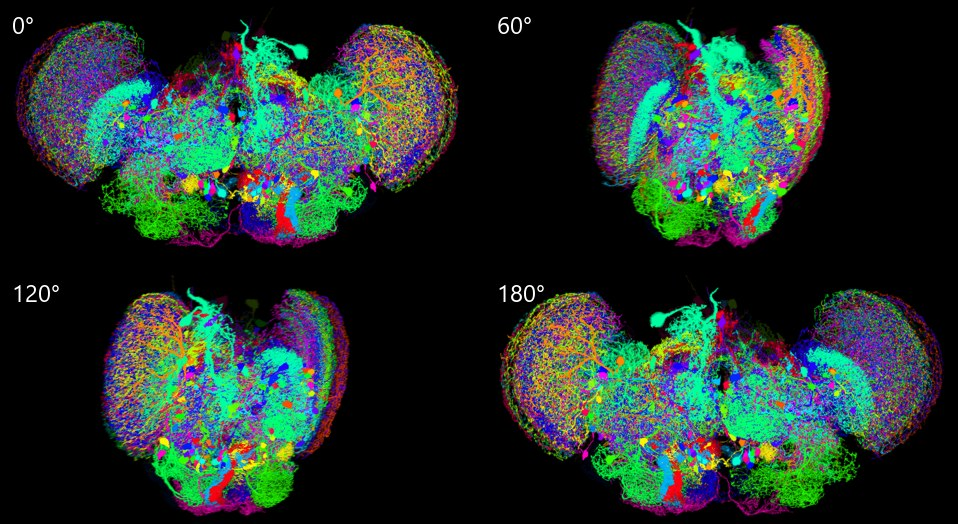

Reproducing Kaleido
One paper, a hundred neuron images, one prompt. This episode does two things: it explains the Kaleido paper — how you look at tens of thousands of neurons at once, and how you make neighbors wear different colors; then it has the Agent write the code from scratch and produce the three views and the rotating animation. Every wall it hit along the way is left in, because there is a third thing this episode is about: what agentic coding actually is.
 Play the tutorial video · 14 min 20 s · watch on YouTube ↗
Play the tutorial video · 14 min 20 s · watch on YouTube ↗
How to read this page
The Paper: Looking at a Hundred Thousand Neurons Together
Kaleido (Wang, Chen, He, Wang, Shih, Chiang, Neuroinformatics 2018) is the first tool paper of the FlyCircuit research line. The papers before it had accumulated single-neuron images on the order of a hundred thousand, but “seeing tens of thousands of neurons at the same time” was itself technically stuck: each neuron's image file is about a hundred MB, so loading all 130,000 of a whole brain needs memory on the order of 10 TB — and even if you could load them, commercial 3D software has a ceiling on how many objects it can render at once.
The paper's solution has two parts, each aimed at one bottleneck: memory and color.
A formidable challenge is to simultaneously visualize a large number of distinguishable single-neuron images, with reasonable processing time and memory for file management and 3D rendering. […] Kaleido maximizes color contrast between neighboring neurons so that individual neurons can be easily distinguished.

The Paper: Trick One, Flatten the Layers
The way to deal with “can't load it” is to give up on “one object per neuron.” Kaleido draws all the selected neurons into one and the same 3D image — like flattening ten thousand Photoshop layers into a single picture. Once flattened, the file size depends only on the resolution of that picture (the standard-brain space) and hardly at all on how many neurons were drawn into it: ten thousand and one thousand take up about the same memory.
The price is just as clear: after flattening, individual neurons can no longer be handled separately. The paper's remedy is to leave a lookup channel open — when several neurons occupy the same voxel, only the one with the highest intensity is recorded (winner-take-all), so every lit pixel corresponds to exactly one neuron and clicking it reports the NeuronID.
- A single image is about 10² MB; a whole brain is about 130,000 neurons → naive loading needs on the order of 10 TB — entry, Overview
- Memory is dominated by the standard-brain space; the O(N²) distance and energy matrices are a secondary term; measured up to 10⁴ neurons — entry, Methods
- Output resolution is adjustable, recommended 2048×1024×128; outputs AmiraMesh / OME-TIFF to feed back into general-purpose software

The Paper: Trick Two, Make the Neighbors Wear Different Colors
For ten thousand neurons to be individually recognizable, they have to be given different colors. The trouble with random coloring is that two neurons wound tightly around each other may perfectly well draw almost identical colors. This is essentially a relative of the map-coloring problem — adjacent countries must not share a color — the difference being that “adjacent” here is a matter of degree, and the colors are a continuous hue ring.
Kaleido turns it into a physics problem. Between every pair of neurons there is a “discomfort”: the closer they are and the more alike their colors, the more uncomfortable it is. Sum over all pairs to get a total energy, then use Monte Carlo to swap colors over and over — accept when the energy drops, occasionally tolerate a temporary worsening — until spatial neighbors sit far apart on the hue ring.
- Transfer the single-neuron images into the standard brain; at any one voxel record only the strongest neuron
- Draw 100 voxels at random from each neuron; for every point of the first neuron find the nearest point of the second, average over both directions → distance matrix D
- Choose a coloring mode: automatic (by distance) / by file / random / grayscale
- The hue angles of N neurons are uniformly distributed, θ(i)=360°·i/N; energy E = Σi<j 1 / ( dij · min(Δij, 360°−Δij) )
- Monte Carlo: random start; at each step take one of the currently highest-energy pair and swap its hue angle with another randomly chosen neuron; acceptance probability min(1, e−βΔE); step limit 10N
- HSV → RGB: hue from step 5, S=1, V = normalized intensity; the original intensity serves as α
- Merge and output a single RGBA file

The Paper: Color Can Be Data Too, and Where the Limits Are
Besides the automatic assignment, Kaleido keeps a “color by file” mode: you supply a table specifying the color of each neuron. The paper colors the neurons of the right olfactory module by birthdate and by neurotransmitter, then crosses the two, and different patterns immediately surface in the same mass of images. The authors say these are only “quick impressions” and that rigorous conclusions need further research — but letting the questions worth chasing jump out by themselves is exactly what an exploratory tool should do.
Where are the limits? The ceiling is not in the algorithm but in optics: fluorescence images have limited resolution and light scatters, so when too many neurons are packed into the same space the signal itself is blurred. Beyond that, “good” color assignment here is defined by geometric distance plus hue difference, not by human perception — two color pairs the same distance apart on the hue ring are not necessarily equally easy for the eye to separate, and users with color vision deficiency are not considered by the formula at all.

- Methods cites Fig. 4a when discussing execution time, but Fig. 4a is the energy distribution — it should be Supplement Fig. 1a
- Distance is approximated by sampling 100 voxels per neuron; the effect of the sample size on the stability of the color assignment is not reported
- Monte Carlo carries no optimality guarantee: a heuristic search of 10N steps in a permutation space of size N! finds something “good enough”, not “optimal”
- The quantitative validation (Fig. 4) uses only a random 1,000 neurons, not the 10,000 used for the demonstration
Reproduction: One Prompt, Read the Spec First, Look at the Data First
Next up is EP05, on Kaleido. This episode concentrates on explaining the content of the Kaleido paper, and on reproducing the program. Here are 100 neuron images picked at random from FlyCircuit: (Google Drive link)
Required output: the same tutorial format as EP01~04 (remember to put figures in!), and note that it has to include the three views of the reassembled image plus a rotating animation. Besides that, put the reproduced program in …\Tutorial\ep05\Kaleido_repo\, but don't push it to GitHub yet
As for the content, besides introducing Kaleido, this time it will use your Agentic Coding/Vibe Coding ability, so use this implementation of yours to explain that concept as well.
Same as before, go all the way to the finished product in one run.
Original (zh-TW)接下來製作 EP05，內容是 Kaleido。這一集專注於介紹 Kaleido 這篇論文的內容，並且將程式復刻。這是 FlyCircuit 裡隨機選出的 100 顆 neuron 影像：（Google Drive 連結）
要求產出：跟 EP01~04 那樣的教材格式（記得要放圖！），注意裡面要放重組起來的影像的三視圖以及旋轉動畫。除此之外，復刻的程式放在 …\Tutorial\ep05\Kaleido_repo\ 裡，但還不要推上 GitHub
內容的部分，除了介紹 Kaleido 之外，這次會用到你的 Agentic Coding/Vibe Coding 能力，所以也要透過你這次的實作，講一下這部分的概念。
一樣一口氣做到成品。
- Read the spec first, don't write code first. It opened the Kaleido entry in the knowledge base and copied out the seven steps of Methods as the specification (the list in step 03). The paper itself publishes no code, so those seven steps plus the energy function are all there is to reproduce from.
- Download the data, look at the header. A 64 MB zip holding 100
*_warp_volume.amfiles (neurons100.zip ↗). The first thing it did was open one file and read the first 1,500 bytes — AmiraMesh binary format, ushort, HxZip (zlib) compression, lattice 542×269×252, BoundingBox in the physical coordinates of the standard brain. - It also glanced at
assemble.pyin the video pipeline and confirmed that a slide there can carry only one image — if the rotating animation is going into the video, the tool has to change first (step 12).
# AmiraMesh BINARY-LITTLE-ENDIAN 2.1 define Lattice 542 269 252 Parameters { Content "542x269x252 ushort, uniform coordinates", SaveInfo "AmiraMesh ZIP", BoundingBox -267.604 273.396 -260.564 7.43608 -147.191 103.809, CoordType "uniform", Filename "/disk/sourceData/data2014_a11/5-HT1B-F-100000/5-HT1B-F-100000_seg001_clear.am" } Lattice { ushort Data } @1(HxZip,638779) # Data section follows
BINARY-LITTLE-ENDIAN, ushort, HxZip (zlib compression; the number after it is the compressed length) and BoundingBox (where this neuron sits inside the standard brain — how much that matters only becomes clear in step 07).Reproduction: The Reader and Sparsification, Verified in Small Steps
- Wrote
amira.py: regexes pull the lattice, dtype, compression method and BoundingBox out of the header; find the position after the@1line,zlib.decompress, thennp.frombufferinto a (z, y, x) array. - Wrote
sparse.py: a 73 MB ushort volume × 100 neurons cannot all stay in memory, so only the coordinates and intensities of non-zero voxels are kept. - Test on one file first: 0.08 seconds, 294,802 non-zero voxels, intensities 0–255 (the ushort in fact holds 8-bit values). Only once that was right did it move on.
def read_amira(path): raw = open(path, "rb").read() head_end = raw.find(b"# Data section follows") header = raw[:head_end].decode("ascii", "replace") nx, ny, nz = map(int, re.search(r"define Lattice (\d+) (\d+) (\d+)", header).groups()) comp = re.search(r"@1\((\w+),(\d+)\)", header) # HxZip, compressed length data_start = raw.find(b"\n", raw.find(b"@1", head_end)) + 1 blob = zlib.decompress(raw[data_start:data_start + int(comp.group(2))]) vol = np.frombuffer(blob, dtype=np.uint16).reshape(nz, ny, nx) # Amira: x varies fastest ... $ python -c "...read one file..." (252, 269, 542) uint16 load 0.08s max 255 nonzero 294802
Reproduction: Hitting the Wall — 100 Files, 100 Sizes
- It wrote the distance matrix, the energy function, Monte Carlo, the merge, the three views and the rotation in one go and ran the whole pipeline. Reading, distances and MC all passed; at “merge into one RGB volume” —
IndexError: index 280 is out of bounds for axis 1 with size 269. - One neuron's coordinates ran past the volume of the first one. Checked: 100 files have 100 different lattice sizes and 100 different BoundingBoxes. Each .am is its own separately cropped sub-volume; what they really share is the standard-brain physical coordinates the BoundingBox lives in (voxels of 1 µm).
- Back to step 1 of the paper, “transfer the single-neuron images into the standard brain” — on this data it means exactly this: index → bbox_min + index × voxel_size, then align everything onto the same integer grid. Add an
align(); common canvas 242×488×895. - Rerun: 100 neurons, 28,823,759 non-zero voxels, of which 15,684,811 survive winner-take-all — 45% of the voxels are covered over by a brighter neighbor. That number looked too high at first, and was only accepted after checking the voxel size (1.000 ± 0.000003 µm per axis, no scaling error): neurons in the optic lobes really are packed that tightly.
File "kaleido/render.py", line 29, in composite
cur = inten[z, y, x]
IndexError: index 280 is out of bounds for axis 1 with size 269
$ check the lattice and BoundingBox of all 100 headers
Counter({'542 269 252': 1, '487 369 189': 1, '128 168 77': 1, '560 297 201': 1, ... })
100 distinct bounding boxes
-267.604 273.396 -260.564 7.43608 -147.191 103.809
-38.2405 447.76 -307.865 60.1345 -128.89 59.1098
...
$ after the fix
22:13:09 aligned onto the common standard-brain canvas (242, 488, 895) (origin [-140, -337, -450] µm)
22:13:20 100 neurons, 28,823,759 non-zero voxels in total
Reproduction: The First Correct Figure
Once aligned, the three views came out. The front view (projected along z) is unmistakably a fly brain: the round things on either side are the optic lobes, the middle is the central brain, below is the subesophageal ganglion. Among the 100 neurons there is a batch in the optic lobes and a few that project a long way (the pale green one running dorsally at the top is a Trh neuron). The three views are an output the paper does not have; they are what your prompt asked for.

Reproduction: Monte Carlo Stalled, So Run an Experiment
- Implemented the paper's move as written: at each step find the currently highest-energy pair, take one of the two and swap its hue angle with a random neuron, Metropolis acceptance. Ran 20,000 steps; the energy fell from 1.50 for random coloring to 1.29 — but the curve flattened out at around 3,000 steps and did not move for the remaining 17,000.
- Suspicion: attacking only the “worst pair” keeps circling among the same few neurons and gets stuck in a local minimum. The open question recorded in the entry at step 04, “MC carries no optimality guarantee”, is exactly this.
- Run a small experiment: mix in a fraction p of “pick two neurons purely at random and swap”, p = 0 / 0.5 / 1, at 1,000 / 5,000 / 20,000 steps, three seeds per cell. The results are in the table below.
- Decision: default p=0.5 (lower energy, smaller variance), but keep
--p-random 0to restore the paper's original; the finding went into the docstring and the README.
| Move | 1,000 steps (the paper's 10N) | 5,000 steps | 20,000 steps |
|---|---|---|---|
| The paper's original: only move the worst pair (p=0) | 1.3055 ± 0.0016 | 1.3011 ± 0.0021 | 1.2915 ± 0.0094 |
| Mixed: half random swaps (p=0.5) | 1.2923 ± 0.0061 | 1.2734 ± 0.0017 | 1.2630 ± 0.0005 |
| All random swaps (p=1) | 1.2997 ± 0.0005 | 1.2735 ± 0.0011 | 1.2630 ± 0.0015 |
| Random coloring averages E = 1.4892 (20 seeds). Lower energy is better; ± is the standard deviation over three seeds. 100 neurons, distance matrix held fixed. | |||

Reproduction: Kaleido Colors vs Random Colors
It set up the comparison the way Fig. 2 of the paper does: the same neurons, the same front view, Kaleido coloring on the left and random coloring on the right, each cropped to a piece of the central brain with a smaller piece magnified. Honestly, the difference at 100 neurons is not as dramatic as the paper's 10,000 — 100 is not crowded enough. But the magnification still shows it: in the random coloring, that large purple-blue neuron collides with the blue soma beside it, and Kaleido pushes the two apart into green against magenta. The hue-ring figure on the right makes the point more directly: one dot per neuron, a gray line to its nearest spatial neighbor — the lines in the Kaleido panel are visibly longer.


Reproduction: Two Pitfalls in the Rotating Animation
- The rotating animation is an output the paper does not have (it exports a 3D file for Avizo to turn). The method: rotate the point cloud of 100 neurons about the vertical axis and make one color maximum-intensity projection per angle, 72 frames.
- Version one: moiré. A volume 895 voxels wide has to fit into 1,100 pixels; the scale factor is not an integer, so periodically some pixel columns get no voxel at all — grid-like banding appears. That is not a problem with the data, it is a problem with the sampling.
- Version two: too dark. The fix was to draw at double resolution and scale back down (anti-aliasing); the moiré went away — but the whole image got darker, because the empty pixels between voxels were averaged in. 0° and 180° are darkest (x is the sparsest direction).
- Version three: fix 1 voxel = 2 pixels, draw every point as a 2×2 block, then scale back with Lanczos. No seams, no moiré, normal brightness. The price is 28.8M points × 4 × 72 frames, seven minutes.

The Deliverables: Three Views, Rotating Animation, Code Repository
Kaleido_repo/ ├── README.md the seven algorithm steps ↔ code table, three reproduction findings, usage ├── requirements.txt numpy · pillow · matplotlib ├── run.py end to end: read → distances → MC → merge → three views → rotating animation ├── make_figures.py the composite figures for the tutorial ├── kaleido/ │ ├── amira.py AmiraMesh reader (BINARY-LE / ushort / HxZip) │ ├── sparse.py sparsify + align to the standard brain via BoundingBox (the step 07 fix) │ ├── distance.py 100 points per neuron, shortest distances both ways → D │ ├── coloring.py energy function, Monte Carlo (with the p_random switch) │ └── render.py winner-take-all merge, three-view MIP, rotation projection (the three versions of step 11) └── outputs/ mip_*.png · energy.png · rotate.gif/mp4 · hues.json · owner_map.npy · fig_*.png
- Steps 1–6 of the seven were done; step 7, “output AmiraMesh for Avizo”, became PNG / MP4 output plus
owner_map.npy(which neuron each voxel belongs to — the paper's lookup channel, kept in array form) - Only the automatic and random coloring modes were implemented; “color by file” and grayscale were not
- Things the paper does not have were added: the three views, the rotating animation,
p_random, gamma 0.6 (so the fine fibers stay visible) - A full run over 100 neurons takes about 8 minutes, 7 of them the rotating animation; the rest is reading 20 s, distances 1 s, MC 1 s, merge 7 s
What Agentic Coding Actually Is
Part two of this episode is one complete piece of agentic coding. Looking back at its shape and then explaining the concept is easier to follow than explaining the concept first.
Two terms. “Vibe coding” is Karpathy's phrase from early 2025: describe what you want in natural language, let the AI generate the code, look at the result rather than reading the code line by line — go with the feel of it. “Agentic coding” goes a step further: the AI does not just generate, it plans the steps itself, executes, looks at the output, fixes, executes again, and reports back only when it is done; the human gives the goal and the boundaries and is not necessarily present in between. This episode is the second kind: you gave one prompt, and the twelve steps in between (read the spec, look at the data, write, hit the wall, align, run an experiment, three versions) were all walked by the Agent.
| What the human did | What the Agent did | |
|---|---|---|
| Goal | One paragraph: reproduce Kaleido, three views, rotating animation, where the code goes, don't push to GitHub, explain agentic coding | Broke it into a list of deliverables and an order |
| Spec | (already in the knowledge base built in EP01–04) | Read the entry, copied the seven steps and the energy function out as the spec |
| Data | Gave a link | Downloaded it, read the header, decided how to read the format |
| Implementation | — | Wrote five modules, each tested small first |
| Hitting the wall | — | IndexError → checked 100 headers → switched to BoundingBox alignment |
| Judgement | — (looked at the figures afterwards) | MC stalled → experiment → kept a switch; moiré → three versions |
| Sign-off | Look at the deliverable: does it look right, is it enough | Looked at the figures itself first, said where it falls short of the paper |
| Record | — | Findings written into the docstrings and the README; this page |
What separates it from “ask an AI to write me some code” is the loop. Not “write it and hand it over” but “write → run → look → fix”, turning by itself until it stops turning. In this episode that loop turned at least six times: once for the reader, once for the alignment, once for MC, three times for the rotation. The basis for every judgement was output it had produced itself — error messages, numbers, figures.
Where it goes wrong. (1) Looks right, is actually wrong: the moiré version raised no error at all. The Agent caught it itself because it rendered the figure and looked at it; without a “produce something visible” step in the workflow, it would have carried the error onward. (2) Changing the spec on its own initiative: change the MC move and it is no longer a reproduction, so a change has to leave a switch and has to be written down. (3) Being too cautious: last episode the Agent put in no figures at all because of a copyright note, and was overruled — judging the boundary belongs to the human. (4) Honesty when the result falls short: the coloring comparison at 100 neurons is not as dramatic as the paper's, and that has to be said, not argued around.
Four pieces of advice for anyone using this approach: one, spell the deliverables out in the prompt (in this episode the three views, the rotating animation, where the code goes and not pushing to GitHub are all deliverables); two, have it build the smallest verifiable version first, look at it, then scale up; three, make it write the walls it hit and the judgements it made into the code and the README, not just into the conversation; four, you sign off on the deliverable — does it look right, is it enough, should a figure go in — those judgements are still the human's for now.
What this episode teaches
The paper offers two tricks: flatten the layers so that memory is decoupled from neuron count, and write the color assignment as an energy function and minimize it with Monte Carlo. The reproduction walked seven steps, hit the wall twice (data sizes, projection sampling) and ran one experiment (the move). Part three looks back at the whole stretch as one piece of agentic coding.
Three observations
- Read the spec first, look at the data firstThe list of seven steps came from the knowledge-base entry and the file format came from the header — the two minutes before any code was written are what saved the half hour of guessing formats afterwards.
- A sentence in the paper can be the whole problem on real data“Transfer into the standard brain” = 100 separately cropped volumes aligned by their BoundingBoxes. Wrong fast and wrong informatively is an acceptable kind of wrong.
- The loop needs something you can look atThe energy curve is what let you see MC stalling; the stills are what let you see the moiré. Without them the program goes on being wrong with no error message at all.
About your role
What you did in this episode: one prompt (deliverables and boundaries both inside it), supplied the data, looked at the deliverable. Less than in any of the previous four episodes — but “I want three views and a rotating animation”, “remember to put figures in” and “don't push to GitHub” are decisions the Agent does not make for itself. The spec and the boundaries are yours; the loop is its.
What this episode produced
| Item | Contents |
|---|---|
| Kaleido_repo/ | Python reproduction: 5 modules + run.py + make_figures.py + README; not pushed to GitHub |
| outputs/ | The three views, the random-coloring comparison, the energy curve, the hue ring, the 72-frame rotating animation (GIF / MP4), owner_map |
| Tutorial/tools/assemble.py | Gained “animated slides”: if frames/anim/sNN/ holds numbered PNGs, they are cycled to fill the narration's duration |
| Tutorial materials | This page, the video, a ten-question quiz |
| Knowledge base | Unchanged (the Kaleido entry was only read) |
Programs written and packages installed in this episode
| Program / package | Location | Purpose |
|---|---|---|
kaleido/ five modules, run.py, make_figures.py | ep05_eng/Kaleido_repo/ | The reproduction itself and the tutorial figures |
assemble.py (modified) | Tutorial/tools/ | Animated-slide support |
| numpy · pillow · matplotlib · gdown | pip | Numerics, images, plotting, downloading from Google Drive |
Figure sources The five figures in steps 01–04 come from the original paper's figures as extracted into the knowledge-base entry (Wang et al. 2018, Neuroinformatics, Springer Nature), quoted here for teaching; the rest are outputs of this episode's code. The data is 100 randomly chosen FlyCircuit single-neuron images.
Try it yourself
The data. The 100 single-neuron images this episode works on are a random
sample from FlyCircuit, in AmiraMesh format:
neurons100.zip ↗ — 64 MB, 100 *_warp_volume.am
files. Unzip it anywhere; the folder path is the only argument the pipeline needs.
The code. Kaleido_repo/ in this folder is the reproduction, with
its comments and README in English. It needs numpy, pillow and
matplotlib.
pip install -r Kaleido_repo/requirements.txt python Kaleido_repo/run.py <folder with the *_warp_volume.am files> --out outputs python Kaleido_repo/make_figures.py --out outputs
The run is deterministic at the default seed, so you should land on the same numbers this page reports: energy 1.5003 for random coloring and 1.2624 after twenty thousand Monte Carlo steps. Reading it is one thing; watching the energy fall is another.
Check yourself
Ten multiple-choice questions: Kaleido's two tricks, what the energy function does, the walls hit during the reproduction, the loop of agentic coding. After each answer you immediately see whether you were right, and why.